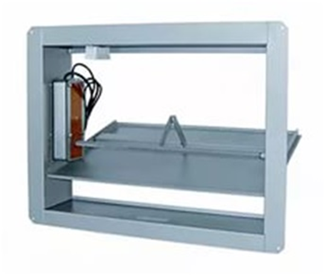
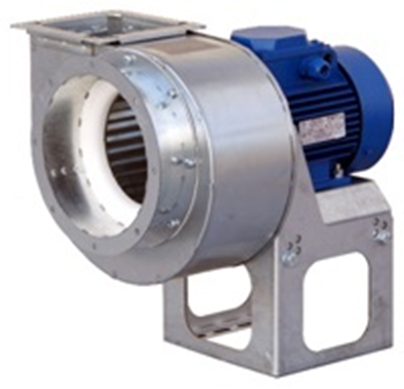
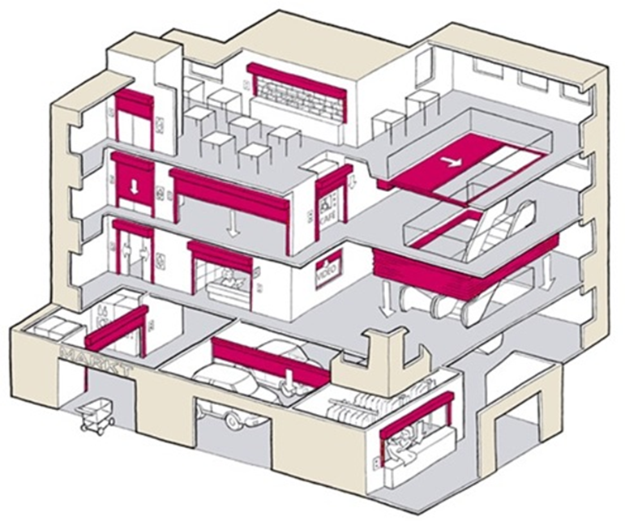
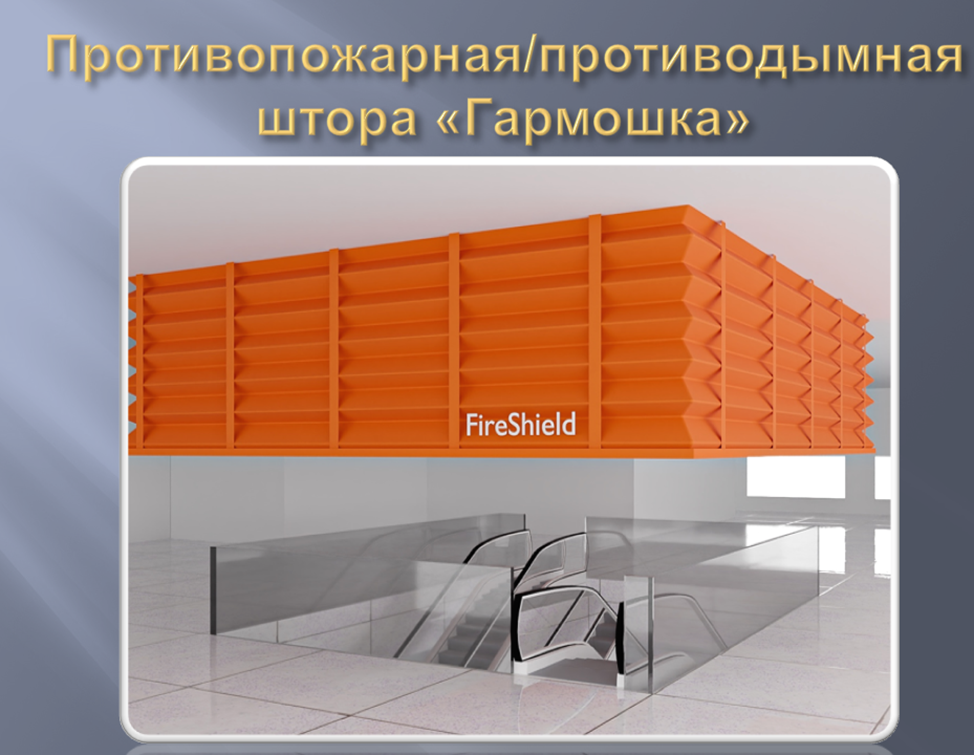

Противодымная вентиляция

В рамках данного урока вы узнаете, что такое противодымная вентиляция и для чего она необходима. Узнаете основные элементы системы и поймете принцип работы, что позволит вам приобрести базу в области обеспечения пожарной безопасности, и уверенно применять ее в трудовой деятельности.
Назначение, виды, основные элементы установок противодымной защиты
Противодымная защита
В комплекс мер по обеспечению безопасности зданий входит система технических решений, направленных на предотвращение задымления путей эвакуации, отдельных помещений и всего здания в целом.
В зависимости от назначения здания, условий развития пожара, потенциальной опасности распространения дыма за пределы горящего помещения, технико-экономических показателей, применяются различные технические решения. Они могут быть объёмно-планировочными, конструктивными или специальными.
Объемно-планировочные решения включают в себя:
- разделение здания на противопожарные отсеки и секции;
- изоляцию путей эвакуации от смежных помещений;
- изоляцию помещений с пожароопасными технологическими процессами и размещение их в плане и по этажам здания.
Конструктивные решения предусматривают использование дымонепроницаемых ограждающих конструкций с достаточным пределом огнестойкости и соответствующей защитой в них дверных и технологических проемов, отверстий для прокладки коммуникаций. Также применяются специальные конструкции для удаления дыма в нужном направлении: дымовые и вентиляционные шахты, люки, проемы.
Специальные технические решения включают в себя создание систем дымоудаления с механическим или естественным побуждением, а также систем, обеспечивающих избыточное давление воздуха в защищаемых объёмах: лестничных клетках, шахтах лифтов, тамбур-шлюзах и т.д.
Противодымная защита — это комплекс технических решений, направленных на обеспечение незадымляемости путей эвакуации и всего здания в целом.
В обоих случаях требуется предусмотреть меры по изоляции защищаемых объемов от подвальных помещений и чердаков, а также помещений различного назначения на этажах здания.
Главная цель противодымной защиты — создание условий для безопасной эвакуации людей в случае пожара. Особенно важно это для зданий с массовым пребыванием людей, детских учреждений, больниц и т.д.
Если вопросы противодымной защиты здания решены неудовлетворительно, продукты горения могут распространяться по шахтам лифтов, коридорам, лестничным клеткам, вентиляционным системам, мусоропроводам, отверстиям и проёмам в ограждающих конструкциях, что затрудняет эвакуацию людей, а в некоторых случаях делает её невозможной. Например, если дым заполняет поэтажные коридоры, то даже незадымляемые лестничные клетки становятся непригодными для использования.
Дым оказывает токсическое и психологическое воздействие на людей. В помещениях, заполненных продуктами горения, видимость резко снижается, что затрудняет ориентацию людей при эвакуации и обнаружение очага пожара. Ещё сложнее ситуация, когда при горении выделяются продукты неполного сгорания или токсичные вещества. Кроме того, продукты горения, нагретые до высоких температур, способствуют распространению пожара и могут вызвать повторные очаги на значительном расстоянии от первоначального. Это предопределяет второе направление противодымной защиты — создание условий для успешного тушения пожара.
Таким образом, технические решения по защите зданий от дыма должны гарантировать незадымляемость путей эвакуации в течение времени, достаточного для эвакуации людей, а также создавать условия для успешной локализации и ликвидации пожара.
Обслуживание систем противодымной вентиляции
На практике в связи с тем, что система противодымной вентиляции не используется до момента пожара, ее техническое обслуживание начинает осуществляться только после происшедшего ЧП.
Объем работ по обслуживанию и их периодичность определяется составом системы и технической документацией на ее оборудование.
В состав системы противодымной вентиляции входят:
- вентиляторы дымоудаления;
- дымовой клапан (нормально открытый противопожарный клапан);
- воздуховоды;
- тамбур-шлюз;
- противодымный экран;
- дымовой люк (фонарь или фрамуга)
В объем работ по обслуживанию в обязательном порядке включаются работы по проверке работоспособности, периодичность которых составляет в соответствие с п. 59 Правил противопожарного режима не реже 2 раз в год.

Дымовые клапаны до пожара находятся в закрытом положении для ограничения перетока воздуха и нормальной работы общеобменной вентиляции.
Данные клапаны после потери напряжения питания должны возвращаться в открытое положение с помощью предусмотренной возвратной пружины.
Обслуживание такого клапана состоит из визуального осмотра, проверки работоспособности и очистке внутренних поверхностей от отложений пыли и др.
Вентилятор дымоудаления

В состав системы дымоудаления входит не только сам вентилятор, но и электродвигатель, поэтому при проверке и обслуживании необходимо соблюдать правила технической эксплуатации электроустановок потребителей (ПТЭЭП).
Срок службы системы составляет не более 10 лет, а гарантийный срок — до 18 месяцев.
Воздуховоды системы
Воздуховоды системы противодымной вентиляции предназначены для перемещения продуктов горения (дымовых газов) с температурой выше 300 °C. Они должны быть выполнены из огнестойких материалов.
Для обеспечения работоспособности системы в условиях пожара необходимо контролировать состояние огнезащитного покрытия в соответствии с техническими условиями его изготовления. Сертификат пожарной безопасности распространяется только на воздуховоды, которые соответствуют требованиям технических условий завода-изготовителя огнезащитного состава.
Для проверки состояния огнезащитного покрытия может использоваться инструментальный контроль толщины покрытия с помощью специального прибора — толщиномера.
Поскольку в дежурном режиме дымовые клапаны закрыты, обычно не требуется очистка воздуховодов от отложений внутри.

Устройство, которое может управляться автоматически и дистанционно, представляет собой выдвижную штору или неподвижный элемент, изготовленный из негорючего материала, который не пропускает дым. Этот элемент устанавливается в верхней части под потолком защищаемых помещений или в проёмах стен. Он должен быть достаточно высоким, чтобы не допустить проникновения дыма в межэтажные пространства и через проёмы в стенах и перекрытиях. Также он должен создавать дымовые зоны в защищаемых помещениях.

Контрольные вопросы
- Требования к содержанию систем противодымной защиты.
- Состав системы противодымной вентиляции
- Гарантийный срок противодымной системы